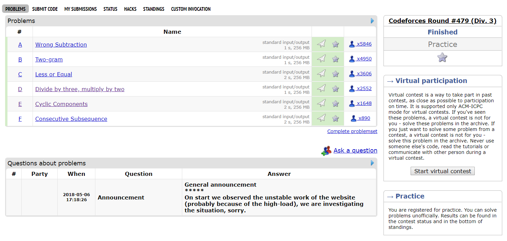

概况：场外补题ak
题目链接

A - Wrong Subtraction
大意：将n操作k次，如果n的末尾不是0就减一否则除以10
1 |
|
B - Two-gram
大意：将n操作k次，如果n的末尾不是0就减一否则除以10
题解：找到最靠前的重复次数最多的二位子串，数据范围奇小双重循环暴力即可
1 |
|
C - Less or Equal
大意：大概就是很蠢的把序列排个序看它第k个和k+1个相不相等，大概就是题目写的很长很蠢所以错的人还挺多，特判一下边缘情况就可以了
1 |
|
D - Divide by three, multiply by two
大意：一个数可以有除以三和乘二两种操作，现在给你一个打乱的序列，要求重新排序使得输出序列中a[i] = a[i - 1] * 2 or a[i] = a[i - 1] / 3（a[i - 1] % 3 == 0），他们说什么鬼dfs居然没tle不知道什么情况，其实分析一下就知道按照3的因子多少和大小两个排序手段就知道一定是正确序列了
1 |
|
E - Cyclic Components
大意：给一个图求单环的数量，水到是挺水的但是读题又是大问题，把所有连通的点度都是2的计算一下就出来了。
1 |
|
F - Consecutive Subsequence
大意：给一个序列输出一个子序列的下标，使得这个子序列是原序列最长的具有a[i] = a[i - 1] + 1性质的序列。
题解：我的解法很暴力就是用map然后从前往后遍历一次，把它每个点改成dp[a[i] - 1] + 1记录一下最大值最后从前往后搜一遍就行，总复杂度不算map的开销的话就是o(n)
1 |
|
总之庆祝我cf第一次的ak写了一篇博客